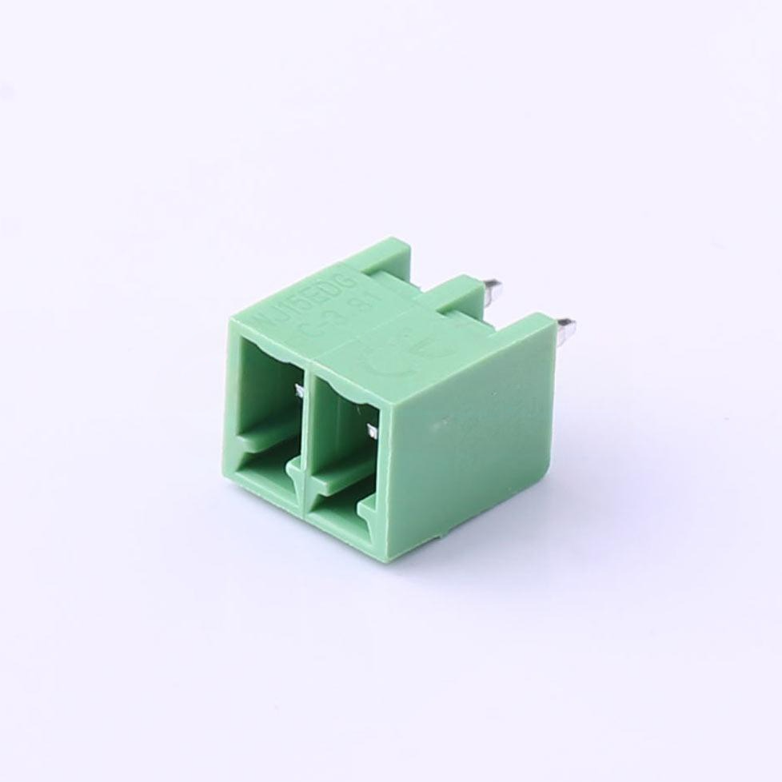
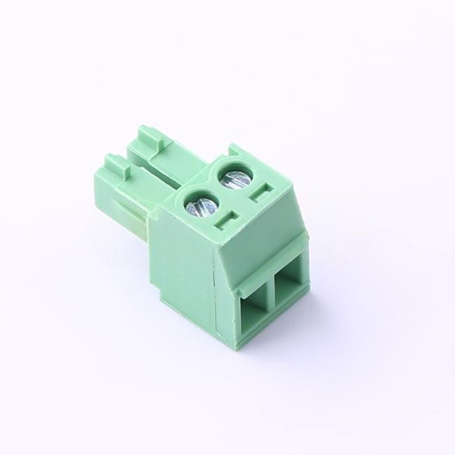
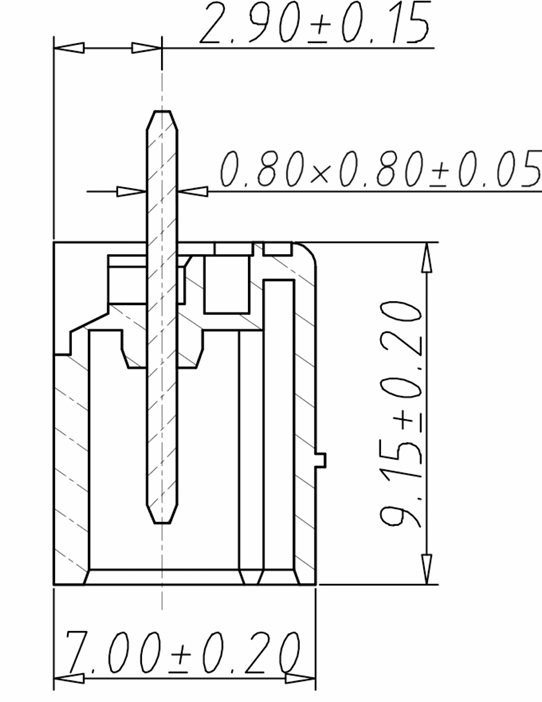
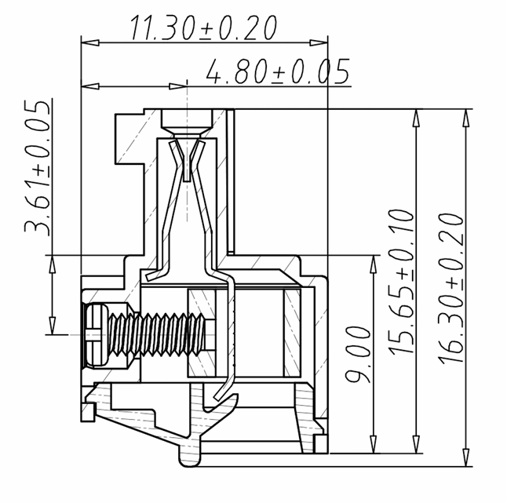
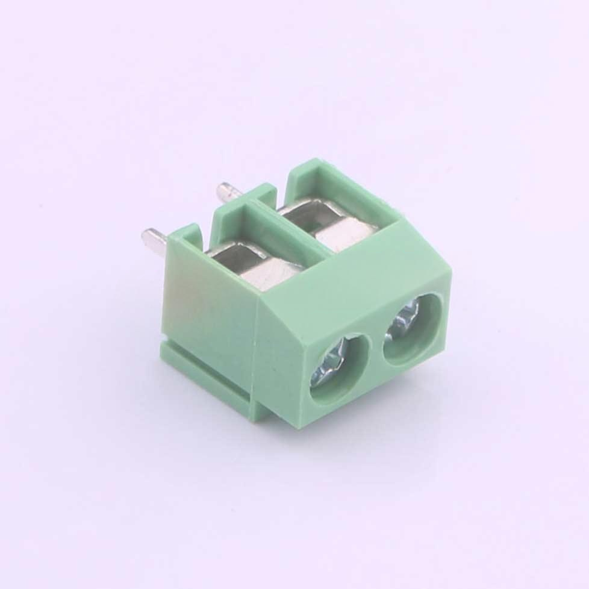
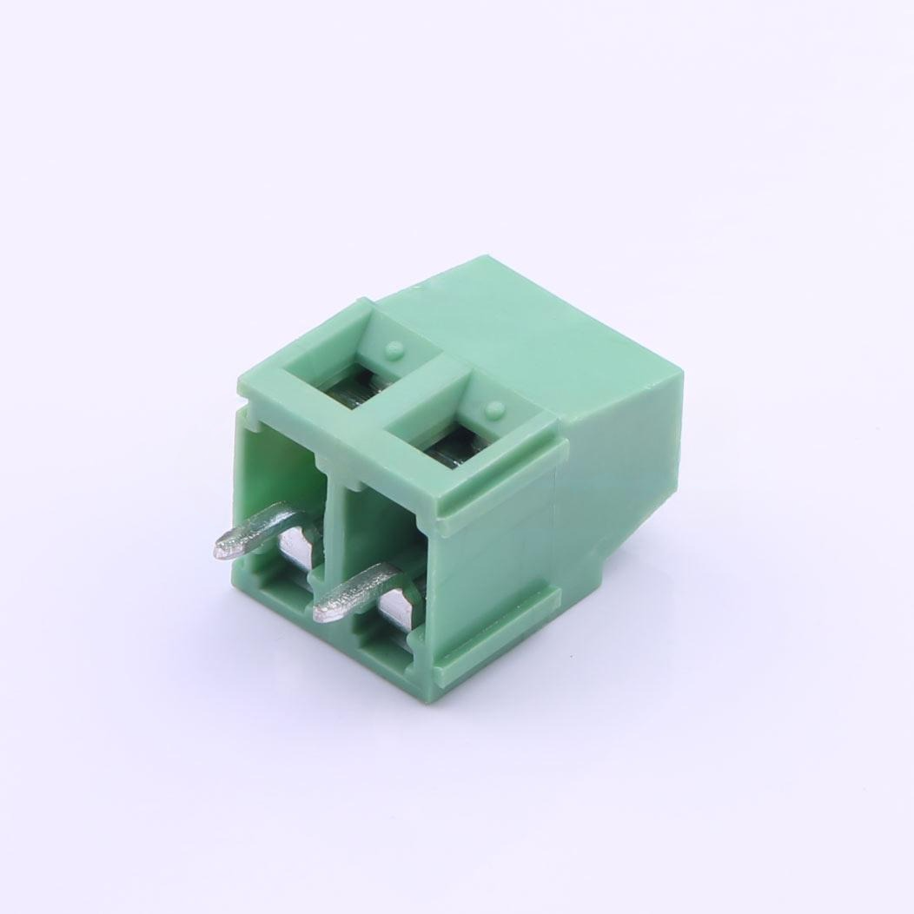
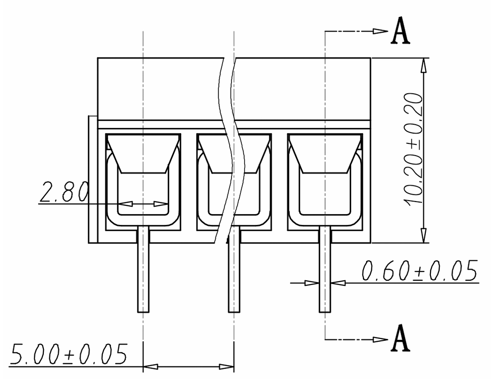
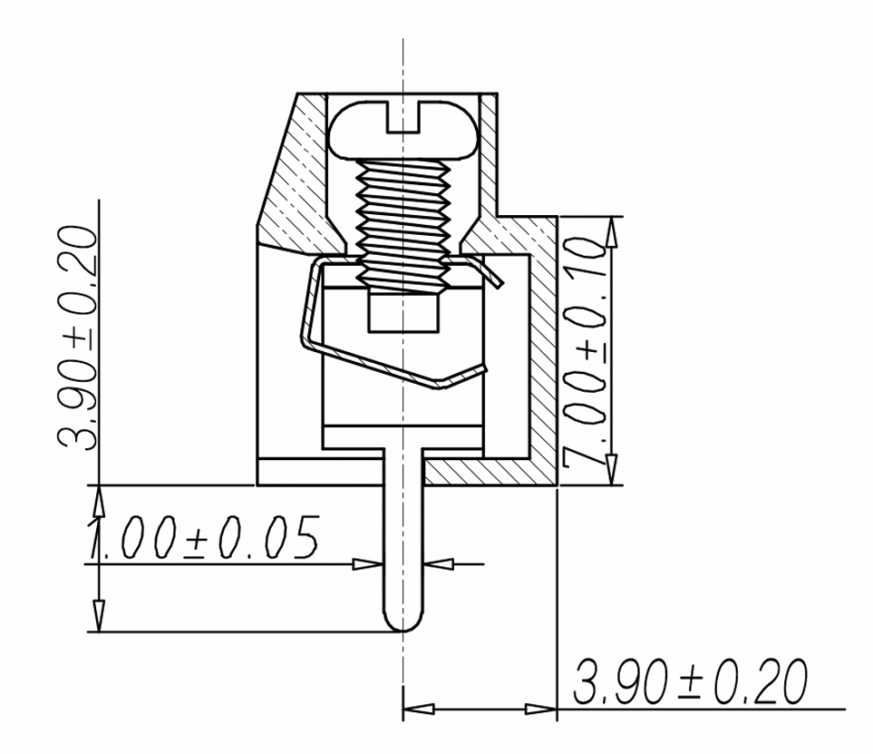

连接器
一、离散式端子
1.插拔式接线端子（Plug-in Terminal Block）




接线步骤
- 准备工作：准备好剥线钳、螺丝刀、万用表及匹配端子。
- 剥线：用剥线钳去除导线绝缘层，确保铜芯无损伤。
- 固定导线：将导线插入插孔，拧紧螺丝至稳固。
- 插接公母端子：对准导向结构垂直插入至锁定。
2.螺钉式接线端子




接线方法
- 准备工作：选择合适的螺丝刀和剥线钳。
- 导线处理：插入导线至压线框底部并绞紧多股线。
- 螺钉拧紧：顺时针逐步压紧，检查牢固性。
对比总结
| 类型 | 安装速度 | 抗震性 | 电流能力 | 适用场景 |
|---|
| 插拔式 | 快 | 低 | 低 | 信号传输、临时测试 |
| 螺钉式 | 慢 | 中 | 高 | 高电流固定设备 |
| 弹簧式 | 快 | 高 | 中 | 自动化场景 |
| 栅栏式 | 中 | 中 | 中高 | 多回路配电 |